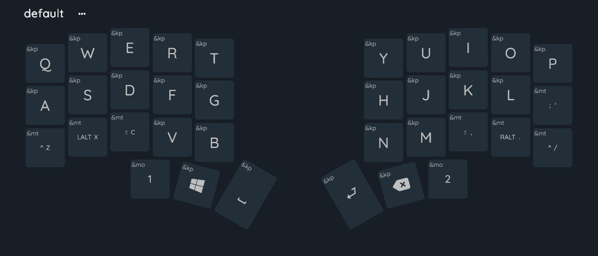
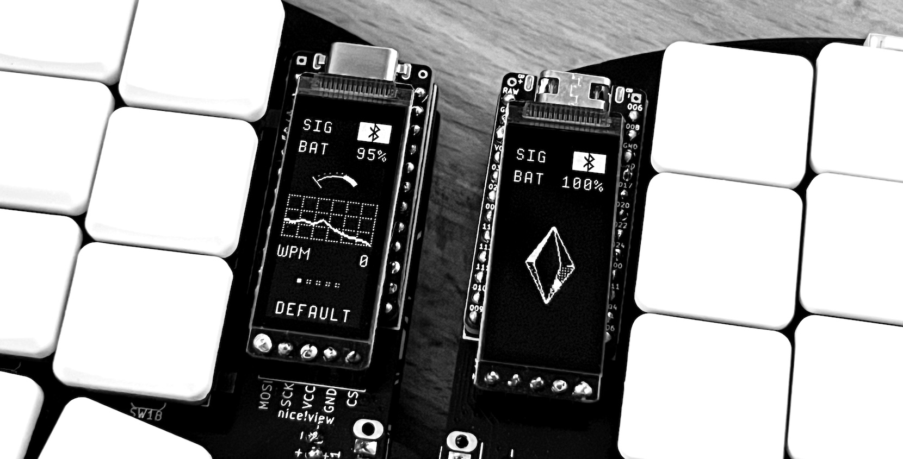
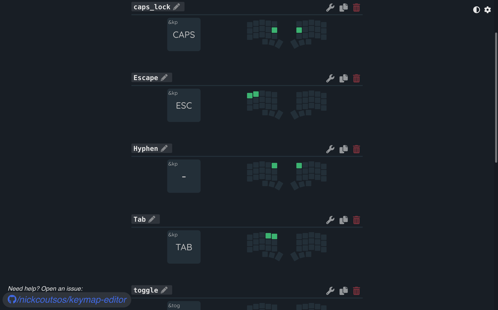
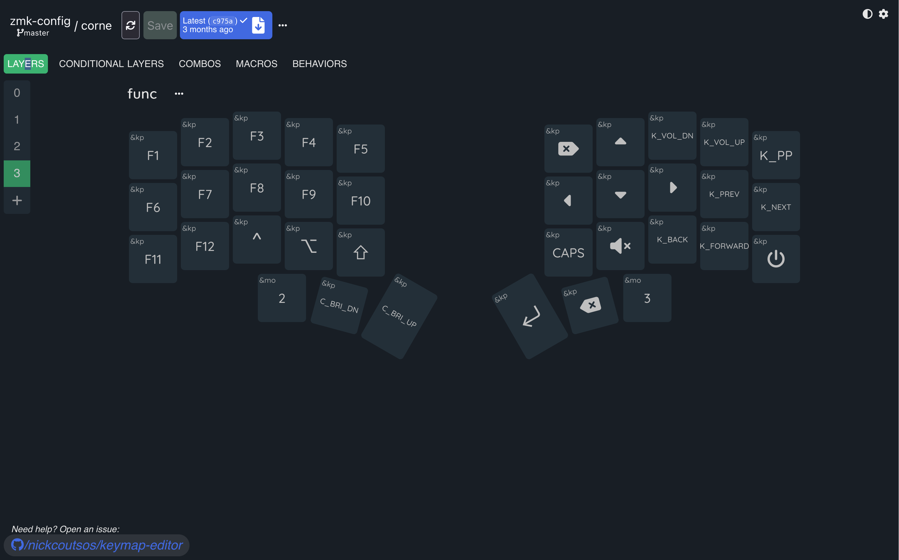

This is a fully custom-built split keyboard, featuring low-profile switches, a 3D-printed case, custom keycaps, and nice!nano controllers/displays. It runs a custom ZMK firmware configuration with a personalized key layout.

I've always wanted to try and design my own keyboard, and learn more about ZMK firmware and microcontrollers. It was a really big step into learning about hardware.
I handled every part of the build, wiring the switches, configuring ZMK, creating the keymap layers, assembling the board, and printing the case and keycaps. The firmware and display programming were all custom-made.


The project began with prototyping different case shapes. Once the hardware was built, most of the work focused on writing the ZMK firmware. This included chords, layers, and function keys.
The final keyboard is a lightweight, ergonomic split board with bluetooth, custom firmware, and custom layers. The displays have status information, and the 3D-printed case gives it a really small profile. It's become my favorite hardware project so far.
